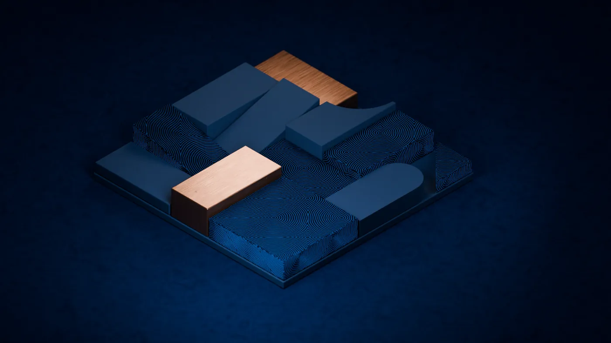

Estrategia
La lógica del crecimiento
Diseño · Estrategia · Tecnología
Convertimos retos de negocio en servicios, productos y herramientas que tu organización puede poner en práctica.
Empresas con las que hemos trabajado
Cómo pensamos
Las empresas necesitan conectar productos, servicios, procesos y tecnología para entregar valor de forma consistente en cada punto de contacto.
En APTO integramos estrategia, diseño y tecnología para transformar ecosistemas, crear nuevos canales, optimizar operaciones y habilitar un crecimiento sostenible.
Nuestras capacidades
La lógica del crecimiento
Las personas en el centro
Ingeniería y construcción
Apto tiene la inclinación a pensar fuera de la caja, más que a tratar de digitalizar un proceso sin cuestionar cómo podría ser diferente.
¿Esto te suena?
Estas son algunas de las situaciones que nuestros clientes buscaban resolver.
El equipo de postventa necesitaba una herramienta estable para dar seguimiento a su trabajo y mantener la información disponible.
Equipo de Postventa · Be Grand
El equipo buscaba traducir sus requerimientos en entregas claras, con prioridades y una ruta de ejecución compartida.
Equipo · MTP (Mexico Telecom Partners)
El reto era conectar las promociones con información que permitiera conocer mejor a sus clientes.
Director Adjunto · Corp. Star GDL (Carl’s Jr.)
¿Es para ti?
Podemos ayudarte a entender el problema, diseñar una respuesta y llevarla a la práctica. El alcance se define según lo que necesitas resolver.
Los canales y los equipos no siempre se coordinan. Identificamos dónde se interrumpe la experiencia y cómo simplificarla.
KIOSKO · más de 1,000 cajeros
La experiencia ya no responde a lo que necesitan tus clientes o tu equipo. Rediseñamos el producto a partir de sus tareas y prioridades.
APYMSA · plataforma B2B de autopartes
La información está dispersa y los sistemas no se conectan. Diseñamos herramientas e integraciones que faciliten el trabajo diario.
Fanosa · automatización comercial
Hay decisiones importantes que todavía se toman con suposiciones. Investigamos la experiencia real para identificar oportunidades.
BayWa r.e. · recorrido de instaladores
Las ideas necesitan foco, validación y una ruta de ejecución. Ayudamos a tu equipo a convertirlas en proyectos con un siguiente paso claro.
Coppel Club de Protección · producto de seguros
El cliente cambia de canal, pero la información y los procesos no lo acompañan. Diseñamos una experiencia coherente de principio a fin.
Grupo San Carlos · omnicanalidad integrada a los sistemas core del negocio
Casos
Proyectos que combinan investigación, diseño y tecnología en contextos distintos.
Coppel Club de Protección
Co-diseñamos con Grupo Coppel la evolución de un producto de seguros con más de veinte años en el mercado. Una estructura modular de coberturas ayudó a hacer la oferta más clara y a responder a distintas necesidades de protección.
APYMSA · autopartes
Rediseñamos y construimos la plataforma de venta entre empresas de APYMSA para facilitar la consulta de productos y la gestión de pedidos.
“Definitivamente, es una plataforma mucho más robusta y alineada con las expectativas de nuestros clientes.”
Negocios Digitales, APYMSA
BayWa r.e. · energía solar
Mapeamos la experiencia de los instaladores e identificamos los puntos de fricción entre áreas, para definir prioridades de mejora.
Investigación y diseño de experiencia · BayWa r.e.
Fanosa · materiales de construcción
Desarrollamos un portal para automatizar tareas del proceso comercial y facilitar la relación con sus clientes empresa.
“Este proyecto optimizó el proceso comercial y representa un paso firme para continuar con la digitalización de la empresa.”
Ejecutiva de proyectos estratégicos, Fanosa
Proyectos
Más de 50 proyectos en retail, servicios financieros, energía, educación, vivienda y telecomunicaciones.
Nuestra metodología
Nuestra metodología tiene cinco etapas. Definimos cuáles requiere tu proyecto y hasta dónde llegar: desde la investigación y el diseño hasta el desarrollo y la puesta en marcha.

¿Cuál es el problema real y qué solución necesitamos?
Taller de estrategia · Taller de producto
¿Cómo llevamos la solución a la operación?
Desarrollo
01
Entendemos el problema desde tu negocio, no desde la tecnología: cómo opera hoy, qué lo limita y qué ya se decidió.
02
Hablamos con quien hace ese trabajo todos los días y revisamos qué está pasando en tu mercado.
03
Ponemos opciones sobre la mesa antes de casarnos con una, en vez de digitalizar el proceso tal como está hoy.
04
Diseñamos la solución y acordamos requisitos, prioridades y una ruta de implementación.
05
Desarrollamos, integramos y probamos la solución. Planeamos la puesta en marcha y el acompañamiento según el alcance acordado.
Preparados para operar y evolucionar
Planeación · Desarrollo · Pruebas · Lanzamiento · Monitoreo · Seguridad
En proyectos de desarrollo, acordamos las actividades de operación, monitoreo y seguridad necesarias para mantener y evolucionar la solución.
El equipo
Uno de los socios de APTO participa en la primera conversación para entender tu contexto y explorar cómo podemos ayudarte.
Conoce nuestra forma de trabajar
Video institucional de APTO
El siguiente paso
Comparte tu reto con Carlos Beltrán, socio de APTO. La primera conversación nos ayuda a entender tu contexto y definir un posible siguiente paso.
Vista previa local: puedes probar el formulario; los datos no se envían.
Carlos Beltrán
Tu primer contacto en APTO
Primero entendemos el reto. Después, definimos cómo podemos ayudarte.
Preguntas